4.1 Introduction
Ensuring research reproducibility extends beyond data and code sharing; it encompasses the entire computational setup used in the research. Understanding the causes of issues associated with computing environment dependencies and learning how to overcome them is crucial to achieving open science. Therefore, in this section, we will:
Identify the root causes of “dependency hell” in computational research.
Discuss the significance of enhancing reproducibility in R-based projects.
Outline practices to improve the reproducibility of R-based projects.
Implement effective strategies to mitigate dependency issues.
4.1.1 What is a dependency?
A dependency represents a directional connection between two or more elements, indicating a logical or sequential relationship among them. If any of these elements fail, it poses a risk to both the efficiency of the process and the intended outcome.
4.1.2 Dependencies in Computational Research
Reusing code for reproducing results and visualizations isn’t always a straightforward ’plug-and-play activity. Complexity arises from the intricate web of dependencies inherent in computational research. These dependencies encompass not only the code itself but also packages, data sources, environment configurations, and nuanced interconnections between these components.
Think of dependencies as building blocks in a towering structure, akin to a complex and intricate skyscraper. Each block represents a crucial element contributing to the overall stability and functionality of the structure. In this metaphor, the foundation of the skyscraper represents the core components, such as programming languages and operating systems. As you ascend the structure, each floor corresponds to a layer of dependencies, with one layer relying on the stability and support of the layers beneath it. If one block is weak or missing, it can compromise the integrity of the entire building. Therefore, managing dependencies becomes critical for open science.
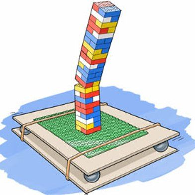
Dependencies can generally be classified as development or runtime. While the former is more of a concern for software developers and beyond the scope of this section, runtime dependencies directly affect researchers and their ability to perform computations to advance or inspect research findings. Runtime dependencies represent components that applications rely on during execution, essential for proper software functionality.
In computational research, dependency refers to any external resource, software, or component necessary for a program, algorithm, or analysis to function correctly. Dependencies encompass libraries/packages, specific software versions, and even hardware configurations needed for executing computational tasks or software applications.
Types of dependencies encountered in R-based projects encompass different layers, including:
Operating system: The computer’s operating system.
System configurations: This includes library locations and the search path used to find files and libraries.
System-level libraries: Non-R libraries or R packages might depend on are listed as System Requirements in R package DESCRIPTION files.
R and R packages: Such as the version of R being used, along with packages like ggplot2 and dplyr.
Quite a list, isn’t it? Each project has its own set of dependencies, making accurate documentation essential! When someone attempts to reproduce your analysis on a different computer, any variation in these elements from your own system during your last analysis could hinder their ability to replicate your work. This discrepancy undermines the principles and motivations behind openly sharing data and code.
Don’t panic! We’ll cover some recommended practices to mitigate this issue in a bit.
Adding package dependencies
When installing packages and not using the GUI in RStudio/Posit, it’s a good practice to include the following syntax in your command:
install.packages("package name", dependencies = TRUE)
This ensures that all required dependencies associated with your installed package will be included.
Other recommendations for installing/updating packages:
At any point in the console, R may ask if you want to “update any old packages by asking,” Update all/some/none? [a/s/n]:“. If you see this, type”a” at the prompt and hit Enter to update any old packages. Updating packages can sometimes take a while to run. If you are short on time, you can choose “n” and proceed. Without updates, you run the risk of conflicts between your old packages and the ones from your updated R version later down the road.
If you see a message in your console along the lines of “binary version available, but the source version is later”, followed by a question, “Do you want to install from sources the package which needs compilation? y/n”, type n for no, and hit enter.
4.1.3 “Dependency Hell” Exemplified
“Dependency hell” is a term frequently used to describe a prevalent issue in code reproducibility. It occurs when a researcher tries to execute code that relies on external libraries, packages, or specific software versions. These dependencies can further branch into their own dependencies, forming a complex network of interconnected elements.
R relies on an extensive library of packages, a major benefit of offering diverse functionalities without users needing to create functions from scratch. Yet, harnessing these packages can present challenges. Starting the process by scripting your analysis is a positive step, but it doesn’t guarantee that you or someone else can accurately replicate your work in the future.
Over time, these libraries, packages, and software may evolve, introducing new versions and additional dependencies or even becoming outdated and unsupported. This evolution can lead to script failures and irreproducible research outcomes.
To illustrate this problem, consider Ruby and Avi’s example. Despite using identical code and data, the software packages installed on their computers have different versions. Ruby’s scripts may break or yield different results in Avi’s computing environment.

Diverse computing setups aren’t just complex to disentangle; they also influence research outcomes. When someone else attempts to reproduce your analysis on a different computer, any variation in these elements from what existed on your system during your last analysis may prevent them from replicating your work. This issue is more common than perceived and isn’t limited to involving a second person, project, or different computer. Reproducibility issues can also arise in your own projects after system upgrades, as noted below:
Very frustrating, isn’t it? While it’s challenging to draw firm conclusions about the causes for those discrepancies based on the limited information shared, most responses from the community suggest adopting reproducibility practices and verifying package updates as a first step. Before we delve into alternatives to circumvent dependency issues and enhance reproducibility in R-based projects, let’s first recap how the R system operates in handling libraries, projects, and their packages.
Caution about updates
R packages aren’t guaranteed to be compatible across minor R versions. Therefore, it’s generally a good idea to reinstall all packages from scratch when upgrading from one version to another (e.g., R 3.5 to 3.6). Only patch version upgrades maintain backward compatibility.
Check it out our handout on this topic.
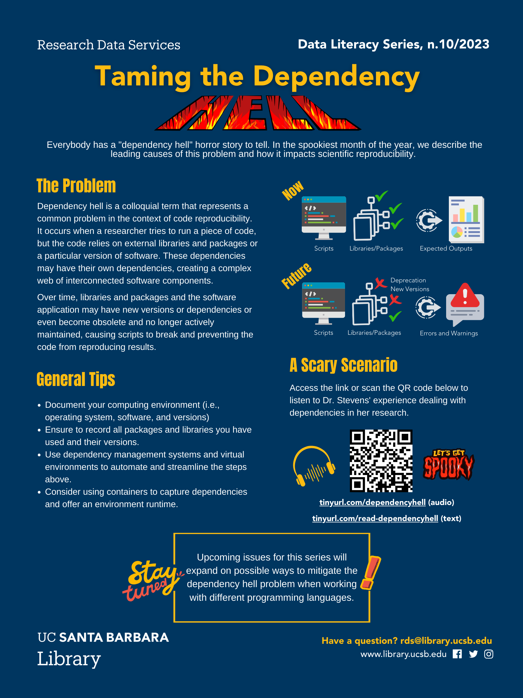
4.1.4 Understanding the R System
In R, packages are collections of R functions, data, and compiled code in a well-defined format, created to add specific functionality. The directories in R where the packages are stored are called libraries. The terms “package” and “library” are sometimes used interchangeably and can cause confusion because the library() function is used to load a package. While this terminological issue hasn’t been addressed, let’s understand how libraries work in R and how they impact your projects.
A repository is a source of packages; install.packages() gets a package from a repository (usually somewhere on the Internet) and puts it in a library (a directory on your computer). The most important repository is The Comprehensive R Archive Network (CRAN), available for installing packages in just about every R session. Other freely available repositories include Bioconductor, the Posit Public Package Manager, and R Universe.
Packages living elsewhere?
To download R packages from outside CRAN, you should indicate the repository address as shown below:
install.packages("MPAgenomics", repos = "http://R-Forge.R-project.org", dependencies = TRUE)
By default, R utilizes a top-level system library for installing base packages and a user library for the packages installed by individual users. The key difference lies in accessibility: the system-level library is available for all users on your system, whereas the other library is exclusively for your use.
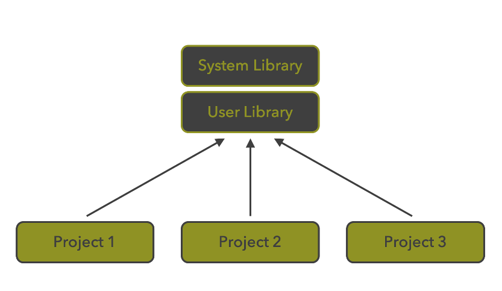
Can you identify the potential problem here? It’s very likely that you’ll have multiple projects with unique dependencies but calling packages from the same library. Consequently, when installing a new package version in R, it automatically replaces the previous version in the user library. This library, shared across all projects by default, enforces the latest installed version of a particular package across all projects. Consequently, projects with code relying on different versions of the same package might break.
Know your library path!
It’s a good practice to know your library path. You can check the location by running .libPaths() in your console.
Give it a try! What’s your current library path?
4.2 Strategies to mitigate dependency issues
Effectively managing dependencies is crucial to ensure the reproducibility and reliability of research reliant on code. Incorporating packages into our code directly ties the code’s execution to these packages. When sharing our code, others must install the required packages for proper functionality. However, complications arise when code written with an older package version encounters an updated version during installation.
Differences in functionality between versions may emerge, posing challenges not just for others using our code but also for those revisiting or transferring code to different environments, such as a year after creation, following R reinstallation, or when changing computing devices.
Packages undergo continuous maintenance, potentially altering functions or behaving differently from their initial use. Sometimes, code might break due to changes in indirectly linked packages that our used package relies upon, despite not being directly loaded. While keeping software updated is advisable, updating packages can cause unexpected disruptions and considerable frustration.
To mitigate these frustrations, adopting dependency management strategies is essential. There are various strategies to address the dependency problem for others and your future self. We’ll describe both minimal and robust approaches to achieve this. Broadly speaking, we recommend:
Document and share information about your computing environment (i.e., operating system, software, and versions).
Record all used packages and their versions.
Employ dependency management systems and virtual environments to automate and streamline the aforementioned steps.
Consider using containers to capture dependencies and offer a consistent runtime environment.
We’ll delve into practical approaches to adopt these recommendations for R-based projects.
4.2.1 Dependency Management in R
Having gained insight into the underlying factors contributing to dependency challenges in computational research, let’s explore methods to implement the aforementioned strategies.
4.2.1.1 Provide a Snapshot of Your Computing Environment with Session Info
Documenting your system configuration and all necessary packages with their versions is crucial to assisting others and your future self. Session info offers valuable clues in case results aren’t reproducible. At a minimum, running sessionInfo() and documenting that information in your README within your repository or project folder is recommended. However, this might be less useful for .R scripts (unless you save the function output to a separate file). It also doesn’t provide executable code for others to install the requirements.
Get the Session Info for your Project
Open your most current project and get your session info if you haven’t yet.
4.2.1.2 Ease the hurdle of dependency installations by including an install.R script
A slightly improved yet not very robust method of managing R dependencies involves including an executable install.R script containing commands to install all required dependencies. But why might this approach not be ideal?
As observed, R’s default library settings can lead to issues. The problem with this approach arises from managing multiple projects at different stages, each with unique dependencies. Every time you start a new project and use the install.packages() function in R, you’ll fetch the latest package version available in CRAN or another repository, reinstall it and potentially replace the package in your environment. This action may break other projects. This is where renv proves advantageous!
4.2.1.3 Pack package dependencies with renv
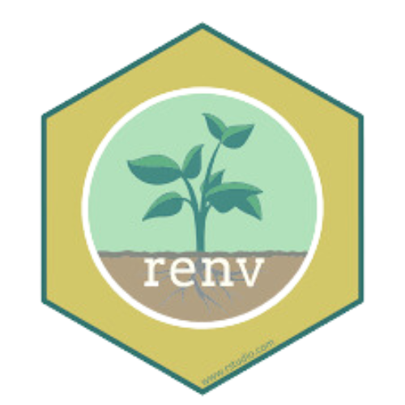
The renv package (https://rstudio.github.io/renv), short for ‘Reproducible ENVironment,’ aids in setting up R projects and managing dependencies to maintain your project:
Isolated (in a positive sense): Enables adding or updating a package in one project without impacting other projects, achieved by creating separate libraries for each project.
Portable: Simplifies moving your R projects across computers and platforms, streamlining the installation of necessary packages.
Reproducible: Logs precise package versions you rely on, ensuring consistent installations wherever you work.
renv establishes a local project library for each project, encapsulating dependencies. This allows easy re-running of results for each project using original package versions. Consequently, you can work on multiple projects without affecting one another and effortlessly share your project and its dependencies for others to reproduce.
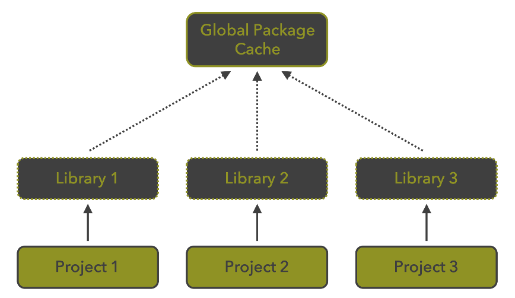
Before delving into how renv works, it’s important to mention that there are various ways to utilize it—either during the initial project creation or later through RStudio’s GUI or the command line. When creating a new project in RStudio, you can check the box as shown below.
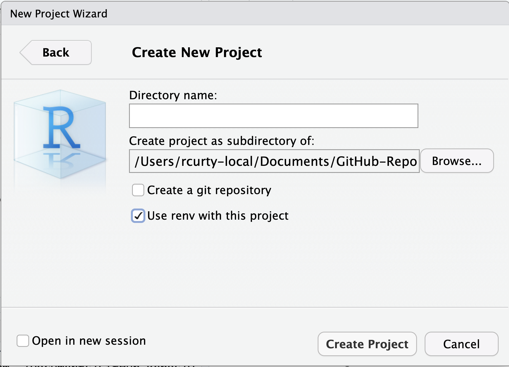
If you happen to overlook that step or collaborate with someone who has not set up renv for the project, you can still do so by selecting Tools > Project Options > Environments:
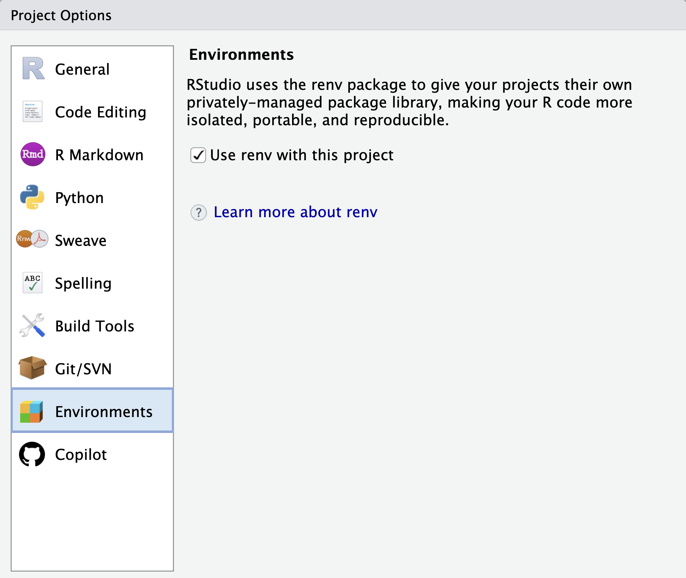
Or check the box to use renv or use the command line:
install.packages("renv")
library(renv)
renv::init()By following any of these approaches, renv establishes your reproducible environment and generates a set of files we will look at in a bit.
Your turn!
Now that you know the commands, initiate renv for our example project.
You should also see a renv icon showing on the packages tab.
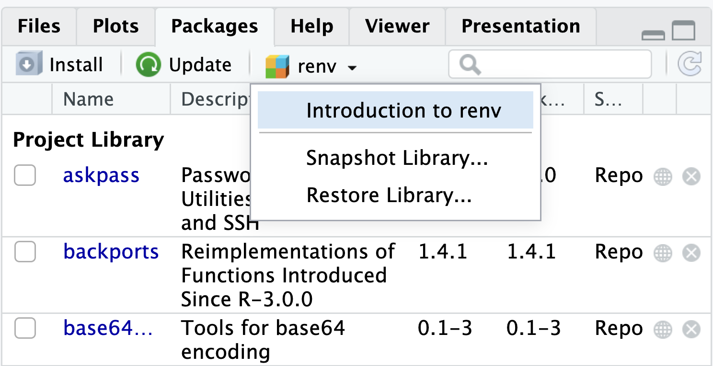
More on RenvFiles
After initiating renv you will notice some new files and directories added to your project.

A project R profile,
.Rprofile. This file is run automatically every time you start R (in that project), andrenvuses it to configure your R session to use the project library. It calls therenv/activate.Rfile. This ensures that once you turn on renv for a project, it stays on until you turn it off.renv/library/*– Folder with many subfolders – contains all packages currently used by your project.The lockfile,
renv.lockfile in JSON format, which records metadata about every package that can be re-installed on a new machine. This is the key ingredient that makes renv work.
Your turn!
Check your renv.lock to see how many packages are there.
One key reason to use renv is to facilitate code sharing, ensuring everyone accesses the same package versions as you. Sharing these files allows others to replicate your work. As mentioned earlier, you’ll initiate this process by calling renv::init(). Next, you’ll need to commit renv.lock, .Rprofile, renv/settings.json, and renv/activate.R to version control, ensuring others can replicate your project environment. It’s worth noting that renv also generates a .gitignore file, streamlining the process for Git users and preventing others from importing unnecessary files.
Whenever someone opens this project on their machine, renv will automatically bootstrap itself, downloading and installing the required renv version. It will also prompt them to download and install all necessary packages.
Working with renv
Besides renv::init(), renv’s workflow include other key functions such as: renv::snapshot(), renv::status() and renv::restore().
Step 1: Initiate renv for a new project with renv::init()
Step 2: Work on your project and add, remove or update packages as needed using the functions below:
renv::install( )orinstall.packages( )renv::remove( )orremove.packages( )renv::update( )orupdate.packages( )
Updating Dependencies
If you’re making changes to a project that has been collecting some dust, it’s good practice to start with an renv::update() before making any changes to the code.
Step 3: Save changes to your project library with renv::snapshot(). By doing so, your renv.lock file will be updated accordingly.
Restoring an existing project using renv
Every time you open a project for which renv has been set up, renv automatically runs and checks that the package versions you have installed on your computer match those of the project. If they match, there is nothing to do. But if there are any mismatches, renv will print a warning resembling the following:
* Project '~/Desktop/myproject' loaded. [renv 0.16.0]
* The project library is out of sync with the lockfile.
* Use `renv::restore()` to install packages recorded in the lockfile.If this happens, simply run renv::restore() from the console pane to download and install the package versions needed to match the project’s requirements. For example, if the project uses tidyverse 1.3.2 and you have an older version tidyverse 1.3.1 installed on your computer, renv will upgrade your RStudio installation to tidyverse 1.3.2. (This works conversely as well: if the project uses an older version of a package you have installed, renv will attempt to download and install the older version for you. Don’t worry about losing the newer version. renv ensures that all versions of all packages remain installed on your computer, available for use by projects as needed).
You may also use renv::status() to check for inconsistencies across the project lockfile, library, and dependencies(). In general, you should strive to ensure that status() reports no issues, as this maximizes your chances of successfully restore the project in the future or on another machine.
There are other packages to help you manage dependencies in R such as Groundhog as described in this lesson. However, not only renv seems to be more widely adopted, but also has the advantage of being integrated with RStudio.
Deactivating and Uninstalling renv
To deactivate renv in a project, use renv::deactivate(). This removes the renv auto-loader from the project .Rprofile, but doesn’t touch any other renv files used in the project. If you’d like to later re-activate renv, you can do so with renv::activate().
To completely remove renv from a project, call renv::deactivate(clean = TRUE). If you later want to use renv for this project, you’ll need to start from scratch with renv::init().
If you want to stop using renv for all your projects, you’ll also want to remove renv's global infrastructure with the following R code:
root <- renv::paths$root()
unlink(root, recursive = TRUE)You can then uninstall the renv package with utils::remove.packages("renv").
Limitations of Renv
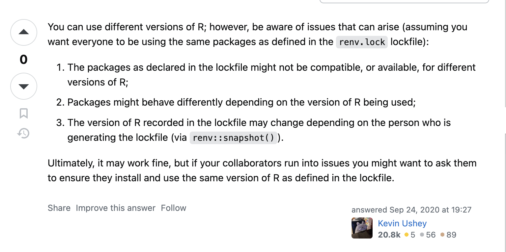
Renv is a valuable tool for improving reproducibility in R projects by handling package dependencies. However, it’s important to note that it’s not a universal solution and has its limitations. Renv primarily concentrates on package management, excluding other crucial elements. For instance, while renv tracks R package versions, it doesn’t handle the R version, operating system, or versions of system libraries.
Take a look at our handout summarizing key points about renv:
4.2.1.4 Capture your computational environment with Binder
So far, we’ve discussed approaches for managing R package dependencies or documenting and sharing a static snapshot of your computational environment. But what if we aim to streamline the process and ‘ship’ a capsule of our computing environment to mitigate potential dependency issues linked to different operating systems, system libraries, configurations, and R versions?
One solution is to use Binder. The mybinder service converts a repository (on GitHub, Dataverse, Zenodo, or Fighsare) into a set of interactive/electronic notebooks or can even initiate RStudio in the cloud as illustrated below:

How to “binderize” your project?
The process of providing a runtime computational environment for your R project is simple and a good strategy to mitigate dependency issues.
Binder supports both R and RStudio. To begin, you need to specify the R version by adding a runtime.txt file at the root directory of your project in your repo:
r-<version>-<YYYY>-<MM>-<DD>E.g., r-4.3.2-2023-03-15
Then, you should add a install.R script containing the list of R packages that need to be installed in order for your script to run. Here is an example: https://github.com/binder-examples/r
Then, access https://mybinder.org and enter your repo URL by selecting the desired repo type (we will stick to GitHub. Then click on “launch” and use the link to share with others.
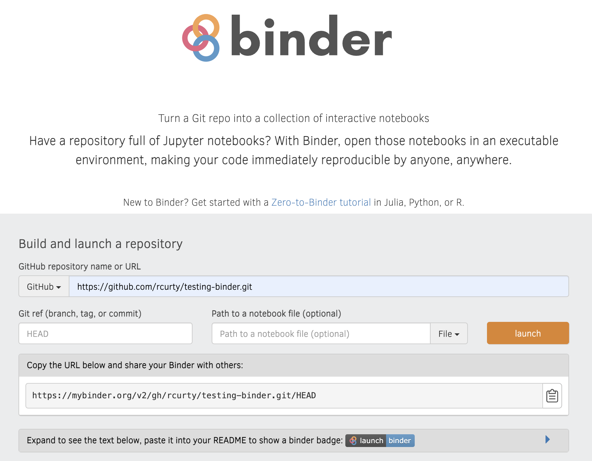
Create a Binder badge for your repo and add it to the README so that it becomes more obvious to potential reusers.
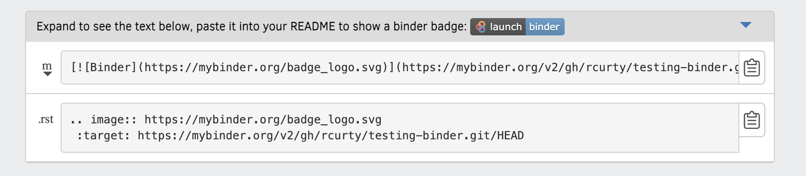
For example repo: https://github.com/binder-examples/r
Want a fancier badge?
You can also customize your binder badge here.
Other recommendations:
Ensure you have updated all your packages before running your script locally.
Add to the README.txt file when your analysis was last performed.
Patience while your Binder builds! It might take a couple of minutes.
Binder Limitations
Not for heavy computing. The code should take less than 10 minutes to run, and the data should be less than 10 MB. You might need to subset it.
The repository should be public.
The repository should not require any personal or sensitive information (such as passwords).
Your turn!
Follow the steps above and “Binderize” one of your project repos.
4.3 Final Considerations
In summary, we’ve delved into the root causes of “dependency hell” in research using R. We’ve seen how crucial it is to make R-based projects more reproducible, not just for reliability but also to build trust in the scientific community. Throughout, we’ve covered various ways to improve reproducibility, stressing the importance of clear methods and documentation, ranging from more simple to more robust approaches. By learning and applying strategies to tackle dependency issues, researchers pave the way for more reliable, reproducible and accessible science.